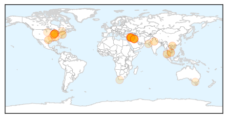
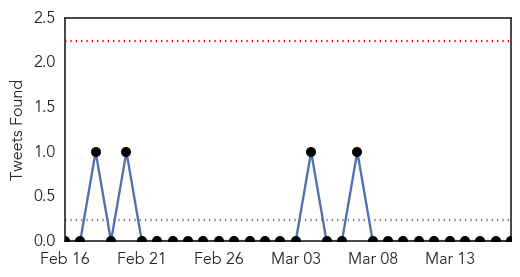

Unknown
30-Day Web Trend
0 alerts, 0 warnings

30-Day Twitter Trend
0 alerts, 0 warnings

Article Locations
Article Confidences

Top Articles:
- 0.972
- Flu kills another Cambodian tot
- 0.917
- Chicago Tribune
- 0.917
- Chicago Tribune
- 0.917
- Chicago Tribune
- 0.917
- Chicago Tribune
- 0.917
- Chicago Tribune
- 0.917
- Chicago Tribune
- 0.917
- Chicago Tribune
- 0.917
- Chicago Tribune
- 0.917
- Chicago Tribune
- 0.910
- The world windows to Thailand
- 0.866
- China says no evidence of hijack, terror attack by Chinese passengers
- 0.866
- France puts off ministers' visit to Moscow -Russian ministry source
- 0.866
- U.S. reviewing Ukraine military aid request but focus now is diplomacy
- 0.866
- Ukraine recalls Moscow ambassador for consultations
- 0.866
- Crimea nationalises energy companies
- 0.866
- Tanker with oil from rebel port returning to Libya -govt
- 0.866
- Russia rejects UN assesment of Russian-speakers' rights in Ukraine
- 0.866
- Russia's parliament to back Crimea vote result on Tuesday
- 0.866
- Crimea to disband Ukrainian military units
- 0.866
- Ukraine parliament backs partial mobilisation
- 0.866
- Russia may offer special tax regime for Crimea
- 0.866
- Australia leads southern search for missing Malaysian plane
- 0.866
- Australia leads southern search for missing Malaysian plane
- 0.866
- Partial results show 95 percent backing for Crimea joining Russia
- 0.866
- Noor rests by a fire at the frontline of Khalidiya neighborhood in Aleppo, Syria
- 0.860
- Study says Vietnam at H7N9 risk as two new cases noted
- 0.634
- Government hospitals in urgent need of sewerage system
- 0.614
- UAMS, Baptist Health Team Up for Vascular Surgery
- 0.569
- Frostbite advisory issued for overnight in Ottawa until Tuesday
- 0.555
- ABC Rural (Australian Broadcasting Corporation)
- 0.541
- South Dakota Pork President Lauds Senator For Seeking PED Virus Help
- 0.533
- Stanford study: South Africa could save millions of lives through HIV prevention
Top Tweets:
-
No tweets found for Mar 17, 2014
Influenza
30-Day Web Trend
0 alerts, 0 warnings

30-Day Twitter Trend
0 alerts, 0 warnings

Article Locations
Article Confidences

Top Articles:
- 0.998
- Study shows only 23% of seasonal and pandemic flu caused symptoms
- 0.995
- Symptoms Just Tip of Flu Iceberg
- 0.989
- Canberrans urged to get flu vaccination before winter
- 0.984
- Most people with flu have no symptoms
- 0.982
- Cambodian girl dies of bird flu: WHO
- 0.964
- Cambodian girl dies of bird flu: WHO
- 0.950
- Virginia flu season winding down
- 0.913
- Investigation of Harford gastroenteritis outbreak continues
- 0.900
- Health Ministry gets ready for Haj
Top Tweets:
-
No tweets found for Mar 17, 2014